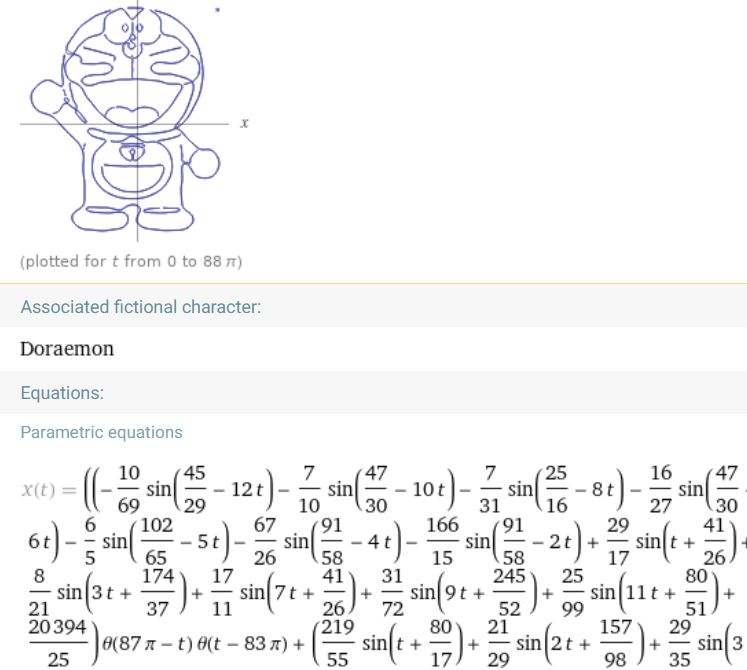
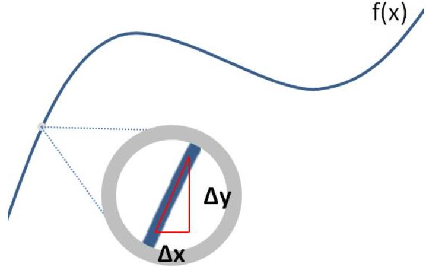
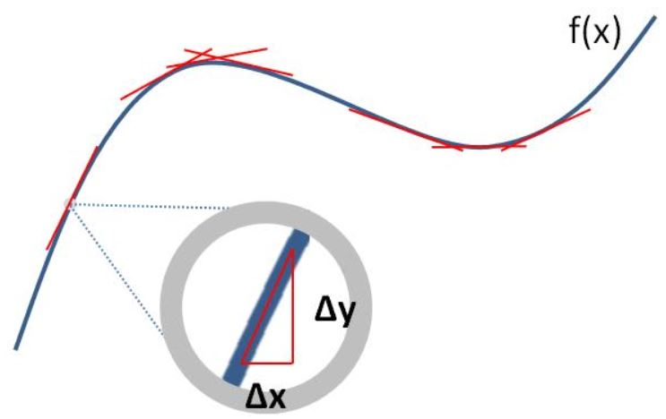
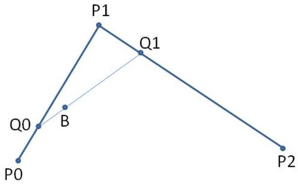
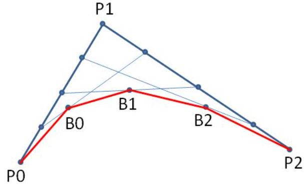
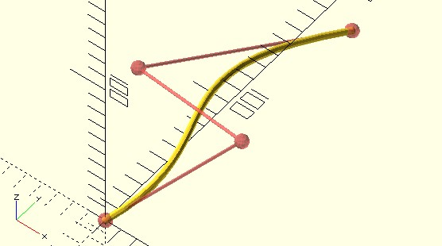
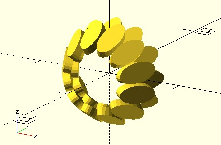
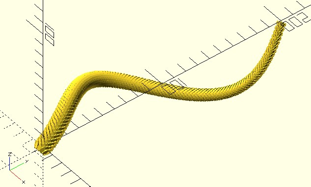
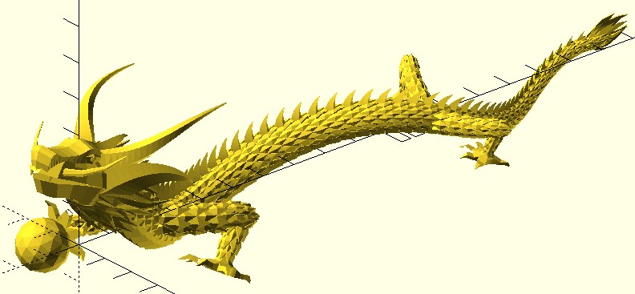

貝茲曲線
March 9, 2022只要有適當的數學公式，就可以算出每個點的位置然後繪製圖形，〈黃金螺線〉 中看過的螺線繪製就是實際的例子，你可以在 Wolfram Alpha 知識引擎中，搜尋「Doraemon‐like curve」，這可以找到曲線繪製出的哆啦 A 夢，以及曲線的參數式：

你可以試著搜尋 xxx curve，例如「person curve」等，來試著找到其他有趣的曲線；然而有時候，我們數學不夠好或者嫌麻煩，難以或不想找出數學公式來表現想要的曲線，怎麼辦呢？
認識貝茲曲線
這時，可以使用〈貝茲曲線〉來近似出想要的曲線，在各種近似曲線中，貝茲曲線的數學原理算是蠻好懂的，認識一下，有助於掌握貝茲曲線或其他近似曲線的運用方式。
如果對微積分還有些印象，大概會記得曲線的微分，可以用來求某點的切線斜率，如果忘了，可以這麼想，如果每次只看曲線中的一小段，那麼這一小段 曲線只要夠短，小到趨近於 0 的極限，那麼幾乎就可以看成是一段直線：

更具體地說，如果曲線的函數是 f(x)，而曲線上有某點 (x, y)，若於 X 方向前進 Δx 距離，會得到 Δy = f(x + Δx) - f(x)，剛才說 到一小段曲線只要夠短的意思是，若 Δx 趨近於 0，這時這一小段曲線變化就可以看成是直線，而直線的斜率是 Δy / Δx（這段描述其實就是微分的定義，而這一小段直線，就是曲線在點 (x, y) 處的切線）。
從這個觀點來看，一段曲線，可以看成是無數的直線構成（這就是積分的概念），只不過，上一個點跟下一個點的直線斜率也許不相同：

如果有曲線的函數 f(x)，其微分 f’(x) 代入每個點的 (x, y) 就可以得到通過這個點的直線斜率，從而得到通過這個點的直線方程式，問題就在於剛剛談到的，有時候，我們數學不夠好或者嫌麻煩，難以或不想找出數學公式 f(x) 來表現想要的曲線，怎麼辦呢？
貝茲曲線的概念就是，直接用直線來描述曲線，這是什麼意思？以二次貝茲曲線舉例來說，可以使用三個點 P0、P1、P2，在 P0 與 P1 間直線的四分之一處找個點 Q0，在 P1 與 P2 間直線的四分之一處找個點 Q1，這時 Q0 與 Q1 會構成一條直線，這時也在 Q0 與 Q1 之間直線的四分之一處找個點 B0。

接著類似的作法，只是將四分之一變成二分之一、四分之三，分別找出 B1、B2 好了，接著將 P0、B0、B1、B2、P2 連起來會是什麼呢？

有點像是曲線了，上面的例子其實就是將直線分為四等分，每次前進四分之一求 B 點，如果四變成了八、十六等更大的數，數字越大就越接近真正曲線了（這也是積分的概念）。
根據這個概念，可以實作更多次的貝茲曲線，不過控制點太多，實際上也不好控制曲線，因此最常使用的是三次貝茲曲線，也就是使用四個控制點。
bezier_curve 函式
dotSCAD 的 bezier_curve 函式實作了貝茲曲線，可以接受多個控制點，例如：
use <polyline_join.scad>
use <bezier_curve.scad>
t_step = 0.05;
radius = 2;
control_points = [
[0, 0, 0],
[40, 60, 35],
[-50, 90, 0],
[0, 200, -35]
];
polyline_join(bezier_curve(t_step, control_points))
sphere(radius);
// 顯示控制點與連接線
# union() {
for(p = control_points) {
translate(p)
sphere(radius * 2);
}
polyline_join(control_points)
sphere(radius / 2);
}
t_step 是個 0 到 1 的值，用來決定怎麼切分曲線（內部實作是切分為 t 等分，t = ceil(1 / t_step)），值越小的話曲線切分越細，這會建立以下的曲線：

使用四個控制點，是比較容易控制貝茲曲線的方式，要更多控制點也是可以，例如：
use <bezier_curve.scad>
use <along_with.scad>
module scales() {
module one_scale() {
rotate([0, 60, 0])
linear_extrude(1, center = true)
scale([2, 1])
circle(1.25, $fn = 24);
}
rotate([90, 0, 0])
for(a = [0:30:330]) {
rotate(a)
translate([5, 0, 0])
one_scale();
rotate(a + 15)
translate([5, 0, 1.75])
one_scale();
}
}
t_step = 0.01;
control_points = [
[0, 0, 0],
[0, 50, 35],
[-100, 70, 0],
[30, 120, -35],
[30, 150, -40],
[0, 200, -3]
];
along_with(bezier_curve(t_step, control_points), scale = 0.5)
scales();
這邊使用了 along_with 模組，可以指定一組點，以及一個子模組，along_with 會在每個點放上一個子模組，scale 可以指定從第一個點至最後一個點，子模組要從 1 縮放至哪個級數。
上例的子模組單一顯示時就只是個環狀的鱗片：

然而，將每個環狀鱗片用 along_with 置放至 bezier_curve 產生的每個點，就會有以下的效果：

這其實是我最初發想「龍」相關作品的靈感起源，例如，〈Dragon & Pearl〉的龍身就是貝茲曲線：

運用 OpenSCAD 建模的好處就是，對於有規則之物，可以實現規則來建模，這就讓你的模型天生就會有故事可以講，也就是其中自然就會有數學、演算法等內涵，例如，若你看看〈Dragon & Pearl〉的原始碼，會發現龍珠的頂點有 66 個，排列的方式與費式數列有關聯，每個點大致上是等距，這些點可以由 dotSCAD 的 fibonacci_lattice 函式產生。
這也使得你在決定是否以 OpenSCAD 建模時，動機必須有別於其他的建模軟體，例如「龍」這個主題，要以佈線或雕刻軟體來建模也是可以，你真硬要使用 OpenSCAD，基於 polyhedron 模組來建模也沒人能阻止你，只不過這麼做就會失去使用 OpenSCAD 的意義。
你想要透過作品述說什麼才是重點，你想述說的東西，決定了你要採用什麼樣的工具！